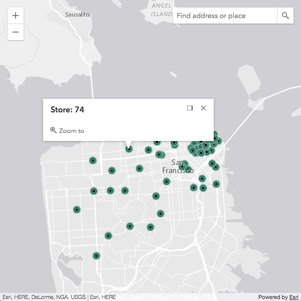
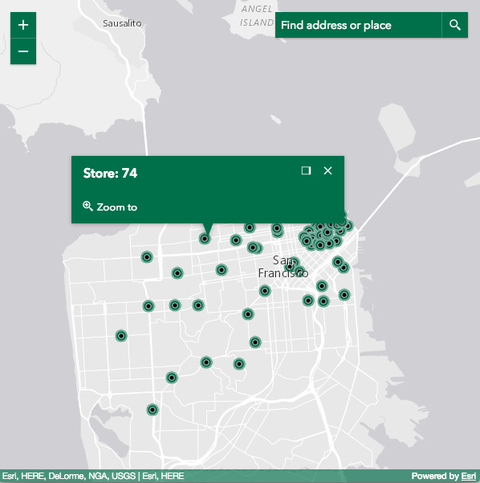

Styling
View-size CSS classes
CSS classes are applied to the View and updated based on its size. These classes are meant to help target elements inside a view and subsequently style them based on the view's size, regardless of the page size. They work in conjunction with the widthBreakpoint, heightBreakpoint, and orientation properties of both the MapView and SceneView.
Read more
The classes specific for width are provided below. The equivalent is also provided for height, e.g. esri-view-width-xsmall also has an esri-view-height-xsmall class.
| xsmall |
|---|
esri-view-width-xsmall |
esri-view-width-less-than-small |
esri-view-width-less-than-medium |
esri-view-width-less-than-large |
esri-view-width-less-than-xlarge |
| small |
|---|
esri-view-width-small |
esri-view-width-greater-than-xsmall |
esri-view-width-less-than-medium |
esri-view-width-less-than-large |
esri-view-width-less-than-xlarge |
| medium |
|---|
esri-view-width-medium |
esri-view-width-greater-than-xsmall |
esri-view-width-greater-than-xsmall |
esri-view-width-less-than-large |
esri-view-width-less-than-xlarge |
| large |
|---|
esri-view-width-large |
esri-view-width-greater-than-xsmall |
esri-view-width-greater-than-small |
esri-view-width-greater-than-medium |
esri-view-width-less-than-xlarge |
| xlarge |
|---|
esri-view-width-xlarge |
esri-view-width-greater-than-xsmall |
esri-view-width-greater-than-small |
esri-view-width-greater-than-medium |
esri-view-width-greater-than-large |
Note that the greater/less than classes are a convenient way to write CSS selectors. For example,
.esri-view-width-less-than-large .esri-foo
is more efficient than
.esri-view-width-xsmall .esri-foo,
.esri-view-width-small .esri-foo,
.esri-view-width-medium .esri-foo
The classes specific for page orientation are as follows:
esri-view-orientation-portrait |
|---|
esri-view-orientation-landscape |
Portrait is used when width is less than or equal to height. Otherwise, it is landscape.
For a look at how these various CSS classes work, please see the Responsive apps using CSS sample.
Themes
The following themes are provided out-of-the-box:
- light (default)
- dark
- light-blue
- dark-blue
- light-green
- dark-green
- light-purple
- dark-purple
- light-red
- dark-red
Using a theme requires only a slight update to the CSS path.
<link rel="stylesheet" href="https://js.arcgis.com/4.9/esri/themes/<theme-name>/main.css">
It is not necessary to import esri/css/main.css when using a themed approach.
Custom CSS using Sass
You can take full control of the compiled CSS by using Sass. Sass is a CSS preprocessor that brings many useful features including variables, mixins, functions, among other capabilities. With Sass, you are able to choose what gets compiled into your main application's CSS file.
This is the recommended approach to customizing CSS as it provides a more robust option than manually overriding it as many times this can cause problems with scalability.
Check out this Sass utility to help aid in creating your own Sass themes.
Widget CSS
CSS classes used by widgets follow the BEM naming convention. This approach helps with semantics, allowing easy identification and styling of classes.
For example, in the snippet below, it's easier to see what each class name affects:
.esri-basemap-toggle { /* root of the widget */ }
.esri-basemap-toggle__image { /* image element owned by the widget */ }
.esri-basemap-toggle__image--secondary { /* alternate version of the image element */ }
Sassy widgets
If you need a scalable approach with more fine-grained control, you may want to consider working with widget Sass files. This is the recommended approach to customizing the widget's CSS as it provides a more robust option than manually overriding it.
Read more
The widgets' Sass files leverage the power of variables and allow you to quickly and easily start customizing the styles. For example, the following snippet highlights the variables that produce the default color scheme.
// Main Colors Vars
$text_color : $Calcite_Gray_700;
$background_color : $Calcite_Gray_050;
$anchor_color : $Calcite_Gray_550;
$anchor_hover_color : $Calcite_Gray_700;
$button_text_color : $Calcite_Gray_550;
$button_text_hover_color : $Calcite_Gray_700;

If you need to customize the colors, changing those variables is all that's needed to easily brand your application.
// Main Colors Vars
$text_color : #fff;
$background_color : #00704a;
$anchor_color : #00704a;
$anchor_hover_color : #000;
$button_text_color : #fff;
$button_text_hover_color : #000;

CSS widget styles
CSS styles are applied based on a CSS class selector similar to what is shown below.
.esri-widget__heading {
color: $header_color;
font-weight: 600;
margin: 0 0 0.5rem 0;
}
h1.esri-widget__heading {
font-size: 20px;
}
h2.esri-widget__heading {
font-size: 16px;
}
h3.esri-widget__heading,
h4.esri-widget__heading,
h5.esri-widget__heading,
h6.esri-widget__heading {
font-size: 14px;
}
All Esri-provided widgets are styled using this opt-in approach, meaning it is styled by default. Unless otherwise indicated, custom widgets are not automatically styled by default as it is the developer's responsibility to opt-in.
These opt-in classes are:
| Opt-in class |
|---|
.esri-widget__table |
esri-widget__heading, h1.esri-widget__heading, h2.esri-widget__heading, etc. |
esri-widget__anchor |
Button styling
The .esri-widget--button is considered a widget that is a button. The Home and Track widgets are two good examples of this.
Using .esri-button styles mimic Calcite buttons. In addition, it uses the same hierarchy.
.esri-button
.esri-button--secondary
.esri-button--tertiary
Additional information
Please refer to these additional links for further information: